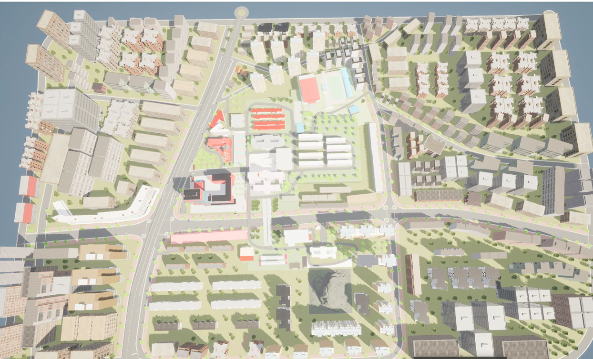
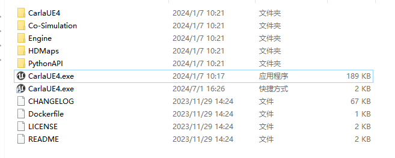

区域宏观
此示例支持联合虚拟引擎仿真模拟实验，得到 3D 宏观区域场景演示。
环境依赖
-
carla编辑器 配置教程
场景设计
针对大区域的场景设计，支持从 openstreet 官网导出路网文件作为模版，然后导入到 roadrunner 中进行道路修改。

导入到虚幻引擎
本示例使用的为 carla 插件作为渲染引擎，进行建筑、树、山等的设计。

导出可执行程序进行仿真模拟实验
运行下述exe程序作为服务端，采用python脚本与其通信。

宏观地图
将地图调整到全局俯视位置。